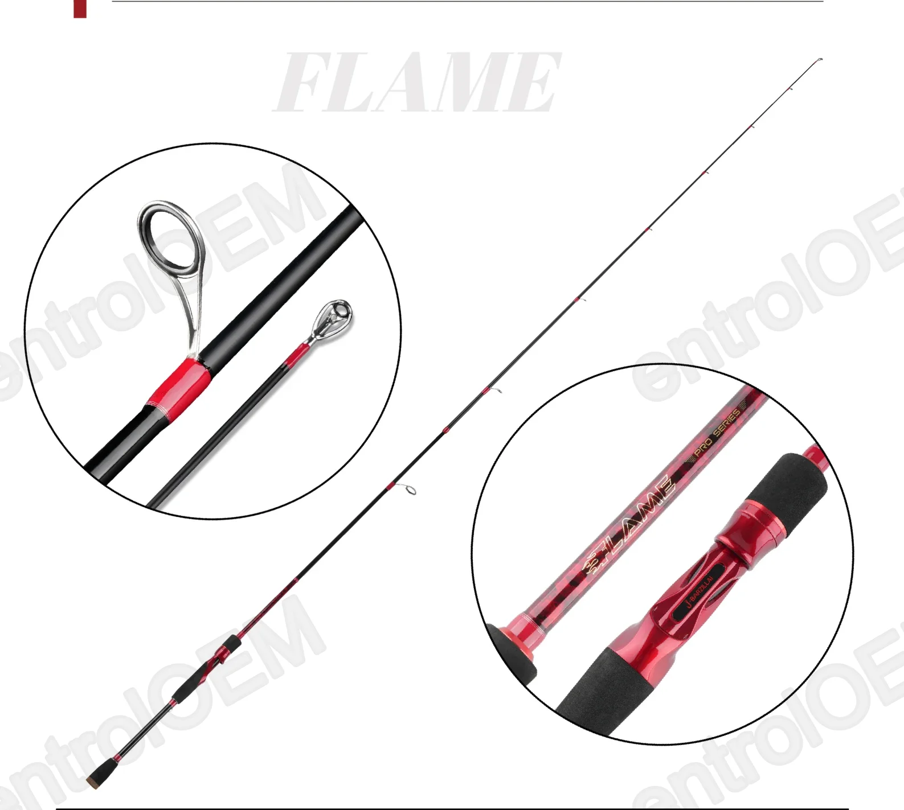

Rod Carbon Fabric: Stiffness, Weight and Durability Trade-offs

Weight and stiffness are attractive, but they are only two of the properties that decide whether a rod survives normal use. This guide explains the practical trade-off behind a light, crisp blank and a heavier, more forgiving one.
What the fabric actually changes
The fibre used in a blank sets how stiff it is for a given wall thickness. A stiffer fibre lets the maker build a lighter rod that still holds its shape, which is why lightweight rods feel so good in the hand. But stiffness is not the same as toughness: a blank can be very stiff and still be sensitive to sharp impacts, poor transport or a load applied at the wrong angle.
The appeal of a light, stiff rod
A light rod reduces fatigue on long sessions, and a stiff blank recovers quickly after a cast, which gives a crisp feel and precise lure control. For an experienced angler who handles tackle carefully and fishes within the rod rating, these are real advantages. That is why lightweight constructions are popular where sensitivity and all-day comfort matter.
The cost of chasing minimum weight
As weight falls, the margin for abuse usually falls with it. A very light, high-stiffness blank tolerates fewer knocks, less over-loading and more careful storage. It can be damaged by a high-stick during a fight, by closing a car door on the tip or by casting a lure beyond the rated range. None of this means the rod is badly made; it means the design target was lightness rather than resistance to rough handling.
Why a more forgiving blank suits beginners
A beginner is still learning to set drag, control a cast and avoid high-sticking. A slightly heavier, more forgiving blank absorbs those mistakes and is far less likely to be broken in the first season. It also tends to be more comfortable with a wider range of lures and line classes. For a first rod, resilience and a predictable bend are worth more than the lowest possible weight.
Construction matters as much as the fibre
The fibre is only one input. Taper, wall thickness, resin content, reinforcement at the ferrule and guide feet, and the quality of the layup all change the finished rod. Two blanks using a similar fibre can behave very differently. Reinforcement placed where the rod sees the most stress can add durability without making the whole rod heavy, which is why the design matters more than a single material label.
Choose for the user, not for the spec sheet
For a private-label range, define who will fish the rod and how. An experienced lure angler who values feel and fishes carefully is a good candidate for a light, stiff build. A general-purpose rod sold to new anglers, to families or to guides who see rough use should prioritise toughness and a forgiving action. Ask the supplier to propose a construction for that user, then verify it on a sample with the intended reel and line before approving production.
How to describe this to customers without over-claiming
Use plain language about behaviour and use: lightweight and responsive for careful, experienced anglers; more forgiving and durable for general use and beginners. Avoid turning a material label into a marketing promise, and avoid claiming a weight or strength figure you have not measured on the finished rod. If you need a specific weight or strength claim, agree a test method with the supplier first.
Turn the research into a specification
If you are building a range under your own brand, we can help turn these choices into a repeatable rod and reel specification. Send us your target species, water type and quantities and we will come back with options.